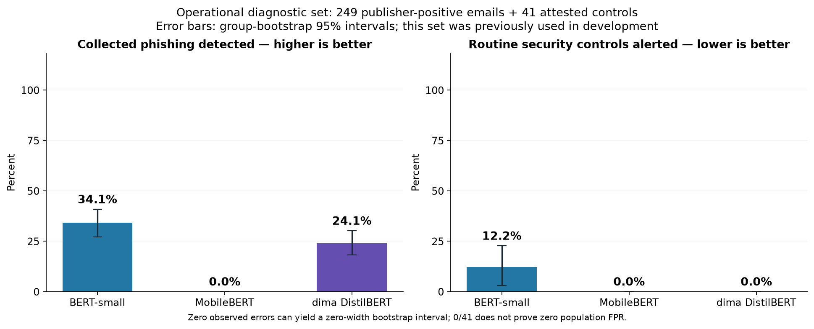
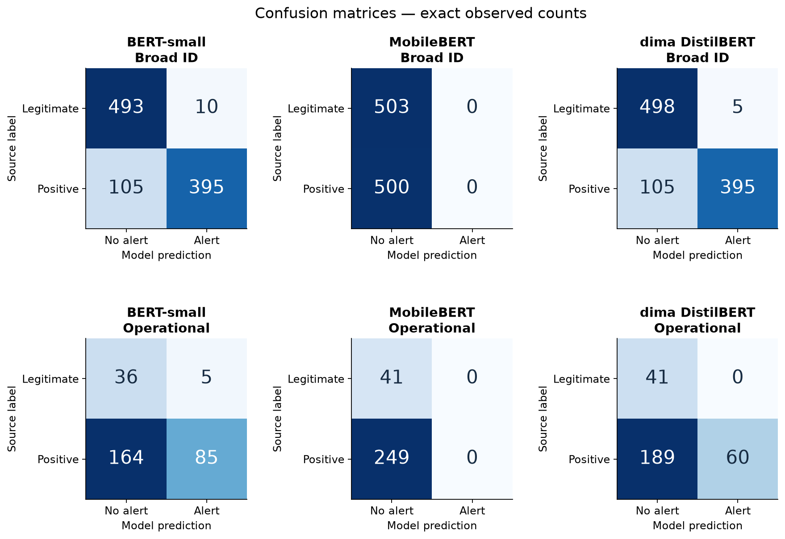
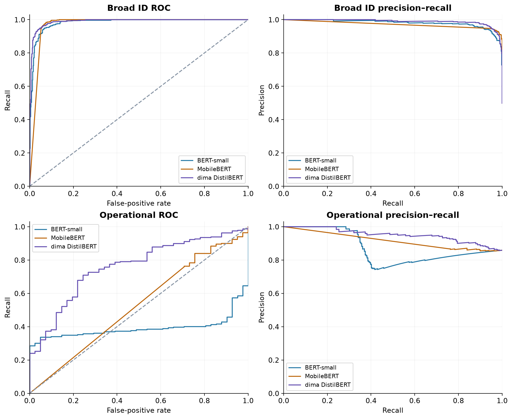
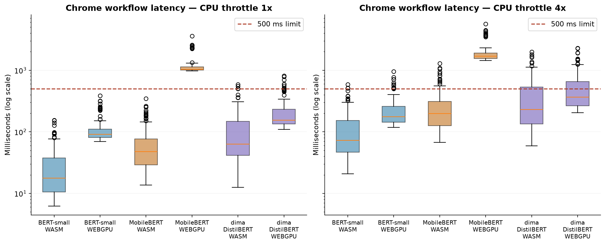
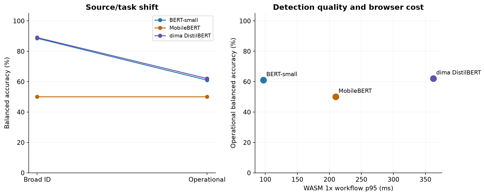

28 October 2026 · Windows Chrome · measured comparison
PhishLens compact classifier benchmark
No original all-gates qualification is claimed.
BERT-small on **WASM** is the strongest engineering baseline for the next development iteration: its measured workflow p95 is 97.05 ms at 1x and 377.28 ms at 4x CPU throttle, its worst recorded WASM cold readiness is 2,977.60 ms, and its required browser assets total 57.23 MB. It is the only candidate meeting all measured WASM speed/cold/size/validity limits in both throttle conditions. The cold result is close to the 3-second limit and is not a guarantee on another machine. Its 4x WebGPU cell fails, so it does not pass the entire original matrix.
**That is not a release recommendation.** BERT-small detected only 85/249 operational publisher-positive messages and falsely alerted 5/41 controls; broad ID recall was 79%. These are measured recall failures, beyond the original missing independent OOD/adversarial requirements. No model is a fully qualified winner, and the existing owner-selected TF-IDF application has not been replaced.
The original MobileBERT zero-alert result is partly a calibration-pipeline precision defect, not evidence that its weights detect no phishing. The old 1e-6 clipping flattened high validation scores. A separate, validation-only precision correction and raw-ranking alert cutoff recover 106/249 operational detections with 4/41 false alerts; ID recall is 65.4%. This diagnostic reuses saved raw outputs; it is not a fresh confirmatory test and does not overwrite the frozen experiment. See the precision follow-up report for the corrected risk mapping and counts.
After that correction, MobileBERT has the highest operational balanced-accuracy point estimate (66.41%), versus dima 62.05% and BERT-small 60.97%. MobileBERT versus BERT-small is not statistically established on the operational set after Holm correction (McNemar p=0.06415), which does not prove equivalence. BERT-small and dima are inconclusive on broad ID (p=0.68486); the frozen speed/simplicity tie preference favors BERT-small there. MobileBERT's ID outcome is significantly weaker than BERT-small's, and its 4x WASM and WebGPU paths exceed the latency limits. These are different tradeoffs, not a universal accuracy winner or an original weighted ranking.
Dima has the fewest observed operational control false alerts (0/41), accompanied by only 60/249 detections and a slower browser path. Zero errors on 41 controls does not establish a zero population false-positive rate. It cannot be selected as a reliable phishing screen on that favorable FPR alone.
The workflow advantages that were demonstrated are local browser inference, zero generated tokens, valid numeric outputs, shared text coverage and complete English software evidence/advice. The outstanding problem is detection quality under source/task shift. Increasing generation length or changing a prompt cannot fix these non-generative classifiers; a revised learned artifact would require development/validation and separately reported evaluation.
Observed classification results
Broad ID: 1,003 source-labeled emails. Operational: 249 publisher-phishing emails and 41 distinct collector-attested controls. The operational set was previously scored by earlier models.
| Model | Broad ID recall / FPR | Operational phishing detected | Controls falsely alerted | Operational balanced accuracy |
|---|---|---|---|---|
| BERT-small | 79.0% / 2.0% | 85/249 (34.1%) | 5/41 (12.2%) | 61.0% |
| MobileBERT | 0.0% / 0.0% | 0/249 (0.0%) | 0/41 (0.0%) | 50.0% |
| dima DistilBERT | 79.0% / 1.0% | 60/249 (24.1%) | 0/41 (0.0%) | 62.0% |
Operational detection and false alarms

Exact confusion counts

ROC and precision–recall curves

Actual Chrome workflow latency

Source shift and speed

Backend and throttle results
100 timed inputs per completed cell after 10 warmups. Cold max includes the first usable reply. Sizes include loaded runtime assets.
| Model | Backend / CPU throttle | Workflow p50 / p95 / p99, ms | Cold max, ms | Assets, MB | Cell status |
|---|---|---|---|---|---|
| BERT-small | wasm / 1x | 17.60 / 97.05 / 151.89 | 1017.50 | 57.23 | complete |
| BERT-small | wasm / 4x | 72.20 / 377.28 / 517.82 | 2977.60 | 57.23 | complete |
| BERT-small | webgpu / 1x | 90.61 / 249.11 / 317.33 | 1272.51 | 57.23 | complete |
| BERT-small | webgpu / 4x | 175.78 / 591.17 / 769.32 | 3746.29 | 57.23 | complete |
| MobileBERT | wasm / 1x | 47.46 / 209.78 / 263.82 | 1353.70 | 54.82 | complete |
| MobileBERT | wasm / 4x | 196.61 / 820.31 / 1083.04 | 6379.97 | 54.82 | complete |
| MobileBERT | webgpu / 1x | 1030.80 / 2378.13 / 2579.33 | 3263.18 | 54.82 | complete |
| MobileBERT | webgpu / 4x | 1681.43 / 3966.03 / 4443.59 | 10449.12 | 54.82 | complete |
| dima DistilBERT | wasm / 1x | 63.09 / 362.38 / 547.94 | 972.50 | 94.39 | complete |
| dima DistilBERT | wasm / 4x | 229.50 / 1355.10 / 1808.33 | 3417.98 | 94.39 | complete |
| dima DistilBERT | webgpu / 1x | 154.59 / 558.91 / 782.58 | 1381.91 | 94.39 | complete |
| dima DistilBERT | webgpu / 4x | 365.69 / 1494.69 / 2249.66 | 4180.59 | 94.39 | complete |
What these findings support
All three are local classifiers with zero generated output tokens. Risk scores use validation-only calibration. English excerpts and advice come from a separate software layer. No cloud model was called for email scoring.
The 41 controls, source dependence, possible publisher label errors, unresolved MobileBERT training history and reused operational test limit generalization. Original independent OOD/adversarial gates, human explanation quality and installed-extension testing remain unassessed. The original TF-IDF owner choice and application runtime have not been changed.
Read the full report · Exact metrics and paired tests · Run record · Conversion and runtime diagnostics